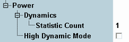

The following parameters configure the power settings of the LTE PRACH measurement.

Defines the number of measurement intervals per measurement cycle (statistics cycle, single-shot measurement). This value is also relevant for continuous measurements, because the averaging procedures depend on the statistic count.
For power dynamics measurements, the measurement interval is completed when the R&S CMW has measured one preamble plus the preceding and the following power OFF time.
The measurement provides independent statistic counts for modulation results and power dynamics results. In single-shot mode and with a shorter modulation statistic count, the modulation evaluation is stopped while the R&S CMW still continues providing new power dynamics results.
Remote command:Enables or disables the high dynamic mode.
The high dynamic mode is suitable for power dynamics measurements involving high ON powers. In that case, the dynamic range of the R&S CMW is eventually not sufficient to measure both the high ON powers and the low OFF powers accurately.
In high dynamic mode, the dynamic range is increased by measuring the results in two shots. One shot uses the configured settings to measure the ON power. The other shot uses a lower "Expected Nominal Power" value to measure the OFF power results.
Disable the high dynamic mode to optimize the measurement speed. Disable it especially if you are not interested in power dynamics results or if you measure low ON powers using a low "Expected Nominal Power" setting.
While the combined signal path scenario is active, this parameter is not configurable.
Remote command: